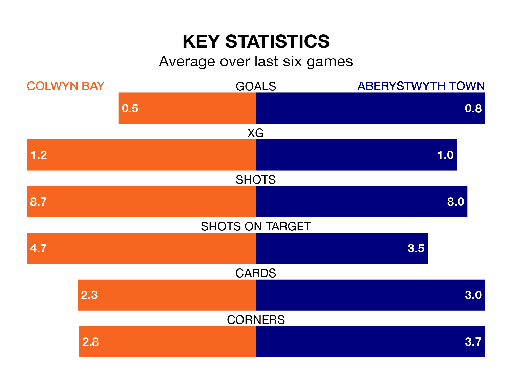

Aberystwyth Town travel to the Four Crosses Construction Arena for Friday lunchtime's match against Colwyn Bay looking to bounce back from defeat last time out in the Welsh Premier League.
The Seasiders, who sit zero in the league after 27 games, fell to a 2-0 away defeat to Haverfordwest County on March 15.
They face a Colwyn Bay side who also lost their last match, a 5-0 defeat to Penybont, and who sit zero in the table.
With 21 goals in 27 games so far this season, Aberystwyth are the league's-5th-lowest scorers with 0.8 goals per game. And they are conceding more than average, letting in 51 goals at a rate of 1.9 per game.
Colwyn Bay are also below average scorers, with 1.1 goals per game, compared to a league average of 1.5. They have conceded 2.2 goals per game.
The hosts are in disappointing form in the Welsh Premier League, with one win and two draws from their last six games.
And also with a win and two draws over that period, Town's form is identical – they have both taken five points from 18.
In the last three years, Colwyn Bay and Aberystwyth have played each other on three occasions. Colwyn Bay won two of them and Aberystwyth one.
Their last meeting was on February 9, when Colwyn Bay won 1-0 away.
Updated: 12:16 (UTC), 25/03/24